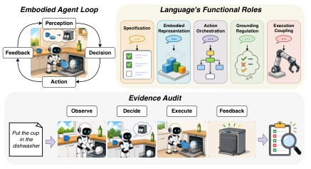
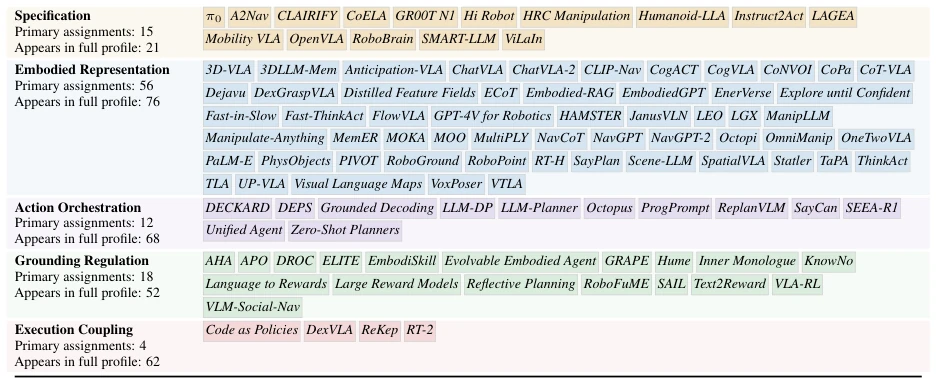
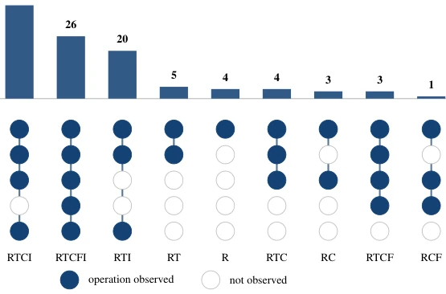

This paper acts as a calm "checkup doctor", pouring cold water on the fervent implementation of embodied intelligence language. It did not invent new models but conducted an "evidence audit" on existing research. Its highlight lies in distinguishing "what language is useful for" from "whether sufficient evidence exists", sharply pointing out that many papers merely "appear useful", while intermediate products may not actually be utilized by downstream modules, or task success is entirely attributed to other modules taking the blame. The drawback is that, being a review, it cannot personally conduct experimental verification, relying entirely on the authors' "mind-reading" to infer the completeness of the original evidence chain, inevitably involving subjective judgments. Furthermore, it offers no specific methods for improvement, only suggestions on "how to report", which may feel like "distant water cannot quench near thirst" for engineers seeking to directly boost leaderboard rankings. However, as a domain compass, it is indeed worth reading, as no one wishes to conduct a pile of unattributable "black box" experiments.
研究动机Motivation
当前具身智能领域，Foundation models 让语言无处不在，但“存在”不等于“有用”。很多工作声称语言实现了 grounding，但提升可能来自更好的感知或动作模型，而非语言本身 (Ahn et al., 2022)。现有综述多按架构或任务分类，忽略了语言的具体功能责任。作者发现证据常存在“替代”问题：比如可解释的中间语言不代表内容正确，任务成功不代表语言贡献。需要明确语言在具身循环中的具体角色，并审计证据是否支持该角色，而非仅看系统整体表现。
In the current embodied intelligence field, Foundation models have made language ubiquitous, yet "existence" does not equal "usefulness". Many works claim language has achieved grounding, but improvements may stem from better perception or action models rather than language itself (Ahn et al., 2022). Existing reviews mostly classify by architecture or task, overlooking the specific functional responsibility of language. The authors found that evidence often suffers from "substitution" issues: for instance, interpretable intermediate language does not imply correct content, and task success does not imply language contribution. It is necessary to clarify the specific role of language within the embodied loop and audit whether the evidence supports that role, rather than merely observing overall system performance.
The core of the method is constructing a "functional role classification" and "evidence audit" framework. First, it defines 5 non-exclusive roles of language in the embodied loop: Specification (Task Definition), Embodied Representation (State Representation), Action Orchestration (Skill Orchestration), Grounding Regulation (Evidence Regulation), Execution Coupling (Execution Coupling). For each role, 5 evidence operations are defined: Route traceability (Path Traceability), Targeted behavioral test (Behavioral Test), Embodied-constraint check (Constraint Check), Closed-loop feedback (Closed-loop Feedback), Claim-relative isolation (Attribution Isolation). The authors traversed 105 papers to check if they satisfy these evidence requirements. For example, merely displaying language intermediate products does not constitute grounding; one must prove that altering that product affects downstream behavior. The framework does not distinguish between modular or end-to-end systems but compares based on "language-behavior" paths.

Figure 1: Overview of the review framework. The embodied loop provides the context in which language may assume five non-exclusive functional roles. Roles are assigned according to what language-derived content does. For each paper–role claim, the evidence audit asks whether the claimed contribution can be connected to downstream embodied behavior.
实验Experiments
实验部分实为对 105 篇论文的审计统计。结果显示，所有论文均满足路径追溯 (R, 100%)，但闭环反馈 (F) 仅 28.6%。92.4% 有行为测试，但 72.4% 有具身约束检查。主要发现是“证据替代”普遍：显式语言中间产物常被误认为 grounding 证据，但实际可能未被使用或错误；系统级成功常被归因于语言，实则未隔离其他组件贡献。例如 RT-2 虽表现好，但动作模块变化也能显著影响结果 (Li et al., 2024a)。审计揭示了当前报告规范中缺乏对语言贡献的严格隔离测试。
The experiment section is actually an audit statistics of 105 papers. Results show that all papers met path traceability (R, 100%), but closed-loop feedback (F) was only 28.6%. 92.4% had behavioral tests, but 72.4% had embodied constraint checks. The main finding is that "evidence substitution" is prevalent: explicit language intermediate products are often mistaken for grounding evidence, but in reality may not be used or are incorrect; system-level success is often attributed to language, yet contributions from other components are not isolated. For example, although RT-2 performs well, changes in the action module can also significantly affect results (Li et al., 2024a). The audit reveals a lack of strict isolation tests for language contribution in current reporting norms.

Figure 2: Functional role profiles in the reviewed literature. For each role, the figure reports the number of papers with that primary assignment and the number in which the role appears anywhere in the full profile. The paper labels show the primary assignments. Each paper receives one primary assignment but may instantiate multiple roles. Appendix C provides the corresponding paper-level inventory.

Figure 3: Exact joint evidence profiles in the reviewed corpus. Bars above the columns give the number of papers in each mutually exclusive profile, and horizontal bars at left give the marginal count for each operation. Filled dots mark observed operations. Connecting segments group operations within a profile and do not indicate order or dependence. R appears in every profile because route traceability is an inclusion requirement.